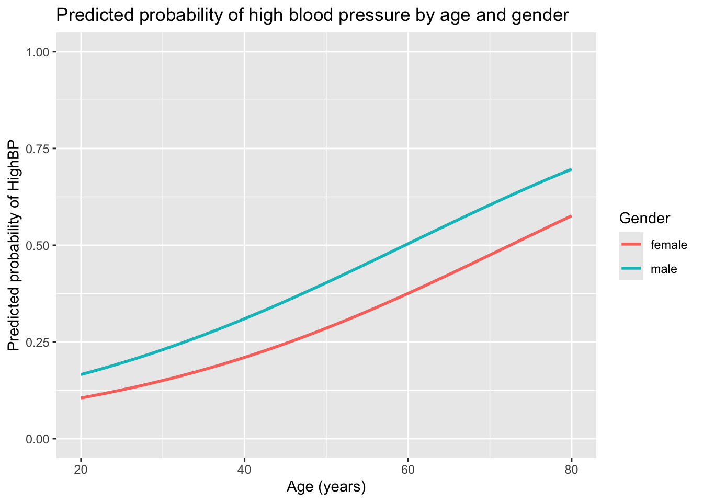

1. Introduction: when your outcome is just "yes" or "no"
If linear regression is the overachiever of statistics, logistic regression is its cousin who shows up whenever the question is basically:
“Will this happen or not?”
In other words:
- Did the patient have high blood pressure? (Yes/No)
- Was the person readmitted within 30 days? (Yes/No)
- Did the patient adhere to treatment? (Yes/No)
Linear regression tries to predict a number on a continuous scale. Logistic regression is the one we call when the outcome is binary: 0/1, Yes/No, Success/Failure.
You could try to brute-force things by running a linear regression on 0/1 outcomes and pretending that the predicted values are probabilities. But:
Linear regression can happily predict values below 0 or above 1
The relationship between predictors and probability is often nonlinear
The variance assumptions for linear regression get grumpy and walk away
Logistic regression fixes this by:
Modeling the log-odds instead of the outcome directly, and
Using a squishy S-shaped function (the logistic function) to translate linear combinations of predictors into probabilities between 0 and 1.
2. Foundations of logistic regression
2.1. Binary outcomes and probabilities
We will assume a binary outcome \(Y\) that takes values:
\(Y = 1\) if the event happens (e.g., high blood pressure),
\(Y = 0\) if it does not.
For each individual with predictor values \(X\) (e.g., age, BMI, gender), we are interested in:
\[
p(X) = P(Y = 1 \mid X).
\]
This is a probability, so it must lie between 0 and 1.
HighBP Age BMI Gender
No :4696 Min. :18.00 Min. :15.02 female:3601
Yes:2454 1st Qu.:31.00 1st Qu.:23.94 male :3549
Median :45.00 Median :27.62
Mean :46.23 Mean :28.69
3rd Qu.:59.00 3rd Qu.:32.10
Max. :80.00 Max. :81.25
Here:
HighBP is our binary outcome.
Age and BMI are continuous predictors.
Gender is a categorical predictor (e.g., Male/Female).
3.2. Fit a logistic regression model
We use glm() with family = binomial to fit a logistic regression:
OR CI_low CI_high
(Intercept) 0.018 0.013 0.024
Age 1.042 1.038 1.045
BMI 1.041 1.033 1.049
Gendermale 1.689 1.520 1.876
Interpretation example (hypothetical):
If the odds ratio for Age is 1.04, we might say:
> For each additional year of age, the odds of having high blood pressure > increase by about 4%, holding BMI and gender constant.
If the odds ratio for BMI is 1.05, we might say:
> For each one-unit increase in BMI, the odds of high blood pressure increase > by about 5%, holding age and gender constant.
Remember: this is odds, not probabilities — but we can get those too.
3.4. Predicted probabilities for specific profiles
Let’s compute predicted probabilities for a few hypothetical individuals:
Age BMI Gender pred_prob
1 30 22 <NA> NA
2 50 30 <NA> NA
3 65 35 <NA> NA
Now we can say things like:
A 30-year-old woman with BMI 22 has an estimated probability p of high BP.
A 50-year-old woman with BMI 30 has a higher estimated probability.
A 65-year-old man with BMI 35 has a higher estimated probability still.
These kinds of comparisons are extremely common in HEOR and health policy reports.
3.5. Visualizing predicted probabilities
We can also visualize the relationship between age and the probability of high blood pressure, for example at a fixed BMI, by using ggplot2:
Code
library(ggplot2)# For plotting, we create a grid over Age and Gender at a fixed BMI (e.g., 27)age_grid <-seq(20, 80, by =1)plot_data <-expand.grid(Age = age_grid,Gender =levels(nhanes_logit$Gender))plot_data$BMI =27plot_data$pred_prob <-predict( fit_logit,newdata = plot_data,type ="response")ggplot(plot_data, aes(x = Age, y = pred_prob, color = Gender)) +geom_line(size =1) +labs(x ="Age (years)",y ="Predicted probability of HighBP",title ="Predicted probability of high blood pressure by age and gender",color ="Gender" ) +ylim(0, 1)

Estimated probability of high blood pressure by age and gender.
This gives us a smooth curve showing how the predicted probability of high blood pressure increases with age, and how it differs by gender (according to the model).
4. Why logistic regression matters in HEOR and health policy
Logistic regression is not just a statistical trick for binary outcomes. In HEOR and health policy, it is one of the core tools for understanding and predicting key events.
4.1. Modeling clinical and utilization outcomes
Many important outcomes are binary:
Hospitalization (yes/no)
ICU admission (yes/no)
Treatment adherence (yes/no)
Presence of a comorbidity (yes/no)
Response to treatment (responder/non-responder)
Logistic regression provides:
Adjusted comparisons between groups,
Estimates of how risk changes with age, comorbidities, or treatment,
A way to generate risk scores or propensities.
4.2. Inputs for decision-analytic and simulation models
Decision-analytic models often need:
Transition probabilities (e.g., probability of having a heart attack next year),
Event risks given patient characteristics,
Baseline and treatment-specific risk estimates.
Logistic regression models can be used to:
Estimate event probabilities given age, sex, disease status, etc.,
Provide individualized risk predictions that feed into microsimulation models,
Inform scenario analyses where you change risk factors or treatment patterns.
4.3. Adjusting for confounding in observational studies
When outcomes are binary (e.g., did the patient die? was the patient hospitalized?), logistic regression serves as a basic workhorse for:
Estimating adjusted odds ratios,
Implementing propensity score methods (propensity scores are often estimated using logistic regression),
Exploring how sensitive results are to different sets of covariates.
While more advanced causal methods exist, logistic regression is often the first step — and sometimes the main engine — behind applied HEOR analyses.
4.4. Communicating risk to decision-makers
Logistic regression outputs can be turned into:
Tables of predicted probabilities for different patient profiles,
Risk curves by age or comorbidity,
Simple “if-then” summaries that are understandable by clinicians, payers, and policy stakeholders.
Being able to say:
“In this population, patients with characteristic X have roughly twice the odds of event Y compared to patients without X, after adjustment.”
…is incredibly valuable in policy discussions.
5. Further reading
If you want to dive deeper into logistic regression (especially in health and biomedical settings), here are some classic and accessible references:
Hosmer, Lemeshow, and Sturdivant – Applied Logistic Regression
A widely used, application-focused text with many medical and epidemiological examples.
Agresti – An Introduction to Categorical Data Analysis
A broader look at categorical data methods, with logistic regression as a key chapter.
Harrell – Regression Modeling Strategies
Excellent for thinking carefully about model specification, validation, and interpretation in clinical and health research.
UCLA IDRE: Logistic Regression in R (online tutorial)
A very practical, example-driven introduction to fitting and interpreting logistic regression models using R.
Pick one (or more) of these when you’re ready to go beyond the basics and into the land of model diagnostics, nonlinearity, interactions, and all the fun ways logistic regression can surprise you.
Source Code
---title: "Logistic Regression in R: Predicting Binary Outcomes"---# 1. Introduction: when your outcome is just \"yes\" or \"no\"If linear regression is the overachiever of statistics, **logistic regression**is its cousin who shows up whenever the question is basically:> "Will this happen or not?"In other words: - Did the patient have **high blood pressure**? (Yes/No) - Was the person **readmitted** within 30 days? (Yes/No) - Did the patient **adhere** to treatment? (Yes/No) Linear regression tries to predict a number on a continuous scale. Logisticregression is the one we call when the outcome is **binary**: 0/1, Yes/No,Success/Failure.You *could* try to brute-force things by running a linear regression on 0/1outcomes and pretending that the predicted values are probabilities. But:- Linear regression can happily predict values below 0 or above 1 - The relationship between predictors and probability is often **nonlinear** - The variance assumptions for linear regression get grumpy and walk awayLogistic regression fixes this by:- Modeling the *log-odds* instead of the outcome directly, and - Using a squishy S-shaped function (the **logistic function**) to translate linear combinations of predictors into probabilities between 0 and 1.---# 2. Foundations of logistic regression## 2.1. Binary outcomes and probabilitiesWe will assume a binary outcome $Y$ that takes values:- $Y = 1$ if the event happens (e.g., high blood pressure),- $Y = 0$ if it does not.For each individual with predictor values $X$ (e.g., age, BMI, gender), we areinterested in:$$p(X) = P(Y = 1 \mid X).$$This is a probability, so it must lie between 0 and 1.## 2.2. Why not just use linear regression?If we used a linear regression model like$$Y_i = \beta_0 + \beta_1 X_i + \varepsilon_i,$$with $Y_i$ in \{0, 1\}, we would run into problems:- The model can produce predicted values below 0 or above 1.- The error variance is not constant (it depends on $p(X)$).- The relationship between predictors and the probability is often curved, not straight.Enter logistic regression.## 2.3. The logistic regression modelLogistic regression models the **log-odds** of the outcome instead of theprobability directly.The **odds** of the event are:$$\text{odds}(X) = \frac{p(X)}{1 - p(X)}.$$The **log-odds** (also called the **logit**) are:$$\text{logit}(p(X)) = \log\left(\frac{p(X)}{1 - p(X)}\right).$$The logistic regression model assumes that the log-odds are a linear function ofthe predictors:$$\log\left(\frac{p(X)}{1 - p(X)}\right) = \beta_0 + \beta_1 X_1 + \beta_2 X_2 + \cdots + \beta_k X_k.$$This has two big consequences:1. The right-hand side is linear in the predictors, which is familiar and easy to work with.2. The model automatically keeps $p(X)$ between 0 and 1 via the logistic function:$$p(X) = \frac{1}{1 + \exp\left(-(\beta_0 + \beta_1 X_1 + \cdots + \beta_k X_k)\right)}.$$## 2.4. Interpreting coefficients (in terms of odds ratios)For a single continuous predictor $X$, holding all other predictors constant:- $\beta_1$ is the change in **log-odds** of the event for a one-unit increase in $X$.- $\exp(\beta_1)$ is the **odds ratio**: the multiplicative change in odds for a one-unit increase in $X$.For a binary predictor (e.g., Male vs Female):- $\exp(\beta_1)$ is the ratio of the odds of the event for one category vs the reference category.People rarely think in log-odds in daily life. Odds ratios and **predictedprobabilities** are usually easier to interpret, especially in HEOR.---# 3. Example with real-world data (NHANES)We will reuse the **NHANES** dataset from the R package `NHANES`, but this timewe’ll model a binary outcome: whether someone has **high blood pressure**.We’ll model:- Outcome: `HighBP` (Yes/No)- Predictors: `Age`, `BMI`, `Gender`## 3.1. Load and prepare the dataWe focus on adults (Age ≥ 18) and keep only complete cases for simplicity.```{r}#| label: load-logistic-data#| message: false#| warning: false# Install NHANES package if neededif (!requireNamespace("NHANES", quietly =TRUE)) {install.packages("NHANES")}library(NHANES)library(dplyr)data("NHANES")# Create the variable HighBP (Yes/No)NHANES <- NHANES %>%mutate(HighBP =ifelse(BPSysAve>=130| BPDiaAve >=80, "Yes", "No") )#table(NHANES$HighBP, useNA = "ifany")nhanes_logit <- NHANES %>%filter(Age >=18) %>%select(HighBP, Age, BMI, Gender) %>%filter(!is.na(HighBP), !is.na(Age), !is.na(BMI), !is.na(Gender)) %>%mutate(HighBP =factor(HighBP, levels =c("No", "Yes")),Gender =factor(Gender) )summary(nhanes_logit)```Here:- `HighBP` is our binary outcome.- `Age` and `BMI` are continuous predictors.- `Gender` is a categorical predictor (e.g., Male/Female).## 3.2. Fit a logistic regression modelWe use `glm()` with `family = binomial` to fit a logistic regression:```{r}#| label: fit-logit-model#| message: false#| warning: falsefit_logit <-glm( HighBP ~ Age + BMI + Gender,data = nhanes_logit,family = binomial)summary(fit_logit)```The `summary()` output shows:- Coefficients on the **log-odds** scale,- Standard errors, z-values, and p-values,- Overall model information (null deviance, residual deviance, etc.).## 3.3. From log-odds to odds ratiosTo get odds ratios and 95% confidence intervals:```{r}#| label: logit-odds-ratioscoefs <-summary(fit_logit)$coefficientscoefs# Odds ratios and 95% CIor <-exp(coefs[, "Estimate"])ci_low <-exp(coefs[, "Estimate"] -1.96* coefs[, "Std. Error"])ci_high <-exp(coefs[, "Estimate"] +1.96* coefs[, "Std. Error"])or_table <-cbind(OR = or,CI_low = ci_low,CI_high = ci_high)round(or_table, 3)```Interpretation example (hypothetical):- If the odds ratio for Age is 1.04, we might say: > For each additional year of age, the odds of having high blood pressure > increase by about 4%, holding BMI and gender constant.- If the odds ratio for BMI is 1.05, we might say: > For each one-unit increase in BMI, the odds of high blood pressure increase > by about 5%, holding age and gender constant.Remember: this is **odds**, not probabilities — but we can get those too.## 3.4. Predicted probabilities for specific profilesLet’s compute predicted probabilities for a few hypothetical individuals:```{r}#| label: logit-predicted-probabilitiesnew_people <-data.frame(Age =c(30, 50, 65),BMI =c(22, 30, 35),Gender =factor(c("Female", "Female", "Male"), levels =levels(nhanes_logit$Gender)))new_people$pred_prob <-predict( fit_logit,newdata = new_people,type ="response"# gives predicted probabilities)new_people```Now we can say things like:- A 30-year-old woman with BMI 22 has an estimated probability **p** of high BP.- A 50-year-old woman with BMI 30 has a higher estimated probability.- A 65-year-old man with BMI 35 has a higher estimated probability still.These kinds of comparisons are extremely common in HEOR and health policyreports.## 3.5. Visualizing predicted probabilitiesWe can also visualize the relationship between age and the probability of highblood pressure, for example at a fixed BMI, by using `ggplot2`:```{r}#| label: logit-prob-plot#| fig.cap: "Estimated probability of high blood pressure by age and gender."#| message: false#| warning: falselibrary(ggplot2)# For plotting, we create a grid over Age and Gender at a fixed BMI (e.g., 27)age_grid <-seq(20, 80, by =1)plot_data <-expand.grid(Age = age_grid,Gender =levels(nhanes_logit$Gender))plot_data$BMI =27plot_data$pred_prob <-predict( fit_logit,newdata = plot_data,type ="response")ggplot(plot_data, aes(x = Age, y = pred_prob, color = Gender)) +geom_line(size =1) +labs(x ="Age (years)",y ="Predicted probability of HighBP",title ="Predicted probability of high blood pressure by age and gender",color ="Gender" ) +ylim(0, 1)```This gives us a smooth curve showing how the predicted probability of high bloodpressure increases with age, and how it differs by gender (according to themodel).---# 4. Why logistic regression matters in HEOR and health policyLogistic regression is not just a statistical trick for binary outcomes. InHEOR and health policy, it is one of the **core tools** for understanding andpredicting key events.## 4.1. Modeling clinical and utilization outcomesMany important outcomes are binary:- Hospitalization (yes/no)- ICU admission (yes/no)- Treatment adherence (yes/no)- Presence of a comorbidity (yes/no)- Response to treatment (responder/non-responder)Logistic regression provides:- Adjusted comparisons between groups,- Estimates of how risk changes with age, comorbidities, or treatment,- A way to generate **risk scores** or **propensities**.## 4.2. Inputs for decision-analytic and simulation modelsDecision-analytic models often need:- Transition probabilities (e.g., probability of having a heart attack next year),- Event risks given patient characteristics,- Baseline and treatment-specific risk estimates.Logistic regression models can be used to:- Estimate event probabilities given age, sex, disease status, etc.,- Provide individualized risk predictions that feed into **microsimulation** models,- Inform scenario analyses where you change risk factors or treatment patterns.## 4.3. Adjusting for confounding in observational studiesWhen outcomes are binary (e.g., did the patient die? was the patienthospitalized?), logistic regression serves as a basic workhorse for:- Estimating **adjusted odds ratios**,- Implementing propensity score methods (propensity scores are often estimated using logistic regression),- Exploring how sensitive results are to different sets of covariates.While more advanced causal methods exist, logistic regression is often thefirst step — and sometimes the main engine — behind applied HEOR analyses.## 4.4. Communicating risk to decision-makersLogistic regression outputs can be turned into:- Tables of predicted probabilities for different patient profiles,- Risk curves by age or comorbidity,- Simple “if-then” summaries that are understandable by clinicians, payers, and policy stakeholders.Being able to say:> "In this population, patients with characteristic X have roughly **twice the> odds** of event Y compared to patients without X, after adjustment."…is incredibly valuable in policy discussions.---# 5. Further readingIf you want to dive deeper into logistic regression (especially in health andbiomedical settings), here are some classic and accessible references:1. **Hosmer, Lemeshow, and Sturdivant – _Applied Logistic Regression_** A widely used, application-focused text with many medical and epidemiological examples.2. **Agresti – _An Introduction to Categorical Data Analysis_** A broader look at categorical data methods, with logistic regression as a key chapter.3. **Harrell – _Regression Modeling Strategies_** Excellent for thinking carefully about model specification, validation, and interpretation in clinical and health research.4. **UCLA IDRE: Logistic Regression in R (online tutorial)** A very practical, example-driven introduction to fitting and interpreting logistic regression models using R.Pick one (or more) of these when you’re ready to go beyond the basics and intothe land of model diagnostics, nonlinearity, interactions, and all the fun wayslogistic regression can surprise you.